It was important to conduct focused research to guide the branding and strategic direction for the Morphienn project. The challenge was to design a distinctive yet relevant brand identity that aligns with the dark, cyberpunk aesthetic while also meeting the expectations of a niche but growing audience. Through user-focused research and strategic questioning, I was able to help shape a branding and monetization plan that reflects both current trends and long-term vision.
At the beginning of the project, I developed the research questions that became the foundation for the entire branding and strategy process. These questions were framed within the Brand Application & Use and Future Evolution & Vision sections. They were designed to explore how Morphienn’s brand could evolve, how it might be applied across different platforms, and how to deepen audience engagement in ways that feel authentic and immersive.
After developing these questions, the insights they generated directly guided me in creating the Release and Promotion Strategy and Monetization Strategies documents. These strategic plans were built around the audience behaviors, preferences, and engagement patterns identified through the research.
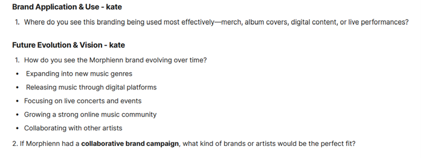
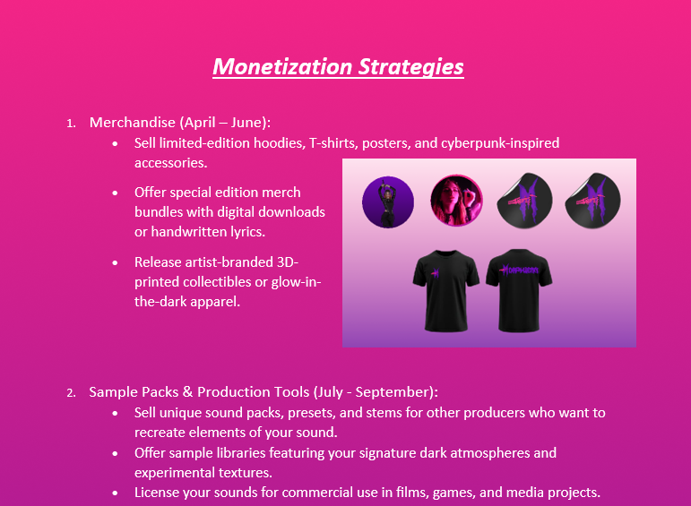
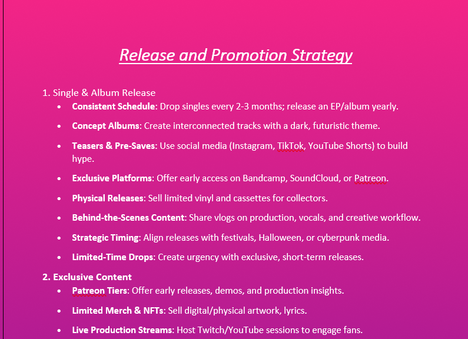
The process was successful and collaborative. My research-driven approach gave the team strong direction in planning a consistent, immersive brand. The questions I developed allowed us to identify key engagement methods and promotional techniques that work well in the darkwave and cyberpunk music space. As a result, we were able to create a comprehensive release and monetization strategy tailored to Morphienn’s audience.
Through this process, I deepened my understanding of how strategic planning—grounded in solid research—can make a brand more memorable and effective. I learned how essential it is to ask the right questions early on to shape everything from content cadence and platform choice to exclusive offerings and monetization models.
Looking back, I see how impactful user-driven research can be in building a strategy that resonates with an audience and sustains long-term growth. In future work, I would enhance my approach by incorporating more case studies from artists who have successfully used hybrid promotional models—balancing underground credibility with scalable monetization. This would enrich the strategic vision even further and offer a broader context for innovation. Ultimately, this experience reaffirmed the value of starting with strong research to shape every layer of a brand—from visual identity to revenue streams.
As part of my preparation for developing a research plan, I created a research proposal. This proposal was meant to serve as a foundation for collecting and organizing valuable information that could help guide the development of our client’s website. It involved both research and critical thinking to identify the key questions we needed to answer.
I began by conducting research using various reliable websites to gather relevant information. My goal was to understand the needs and expectations of users who might visit our client’s website. Once I had collected enough background information, I structured my research questions based on what I had learned.
I also focused on understanding the specific goals and requirements of our client’s website — such as functionality, user experience, design elements, and target audience preferences. This helped me tailor my research to gather insights that were practical and relevant.
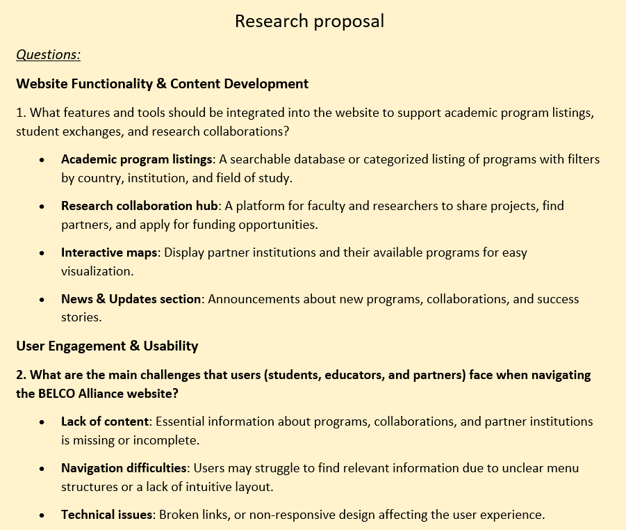
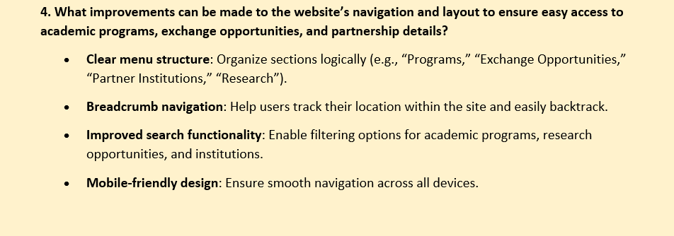
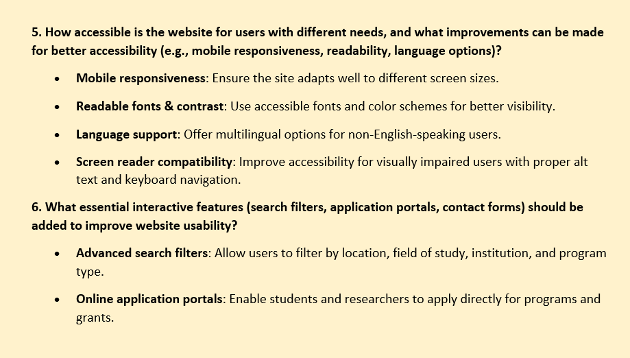
I used the research findings to help design the group project for Belco Alliance, with a particular focus on the Reports section:
The process was smooth but required focus and attention to detail. Finding trustworthy sources took time, as I had to filter out unreliable content. However, once I gathered enough quality information, organizing it into a proposal became easier.
I identified key trends, user needs, and industry standards that could inform the development of the website. I also became more comfortable with turning raw research into structured, goal-driven content.
Creating the research proposal was a valuable learning experience. It helped me develop skills in information gathering, analytical thinking, and planning. I now feel more confident in my ability to conduct structured research and turn it into something actionable.
It also gave me a better understanding of how important research is in the early stages of a digital media project. Taking the time to plan ensures that the final outcome meets the needs of both the client and the users. I’ll definitely carry this approach into future projects.
This document summarizes my research into creating a door animation using web technologies—primarily HTML, CSS, and JavaScript. The goal of the research was to understand how a realistic door-opening effect can be achieved in code, what properties and functions are essential, and which resources offer effective tutorials and demonstrations. I also investigated ways to integrate a video inside the door element using JavaScript logic.
I organized my research into several key categories:
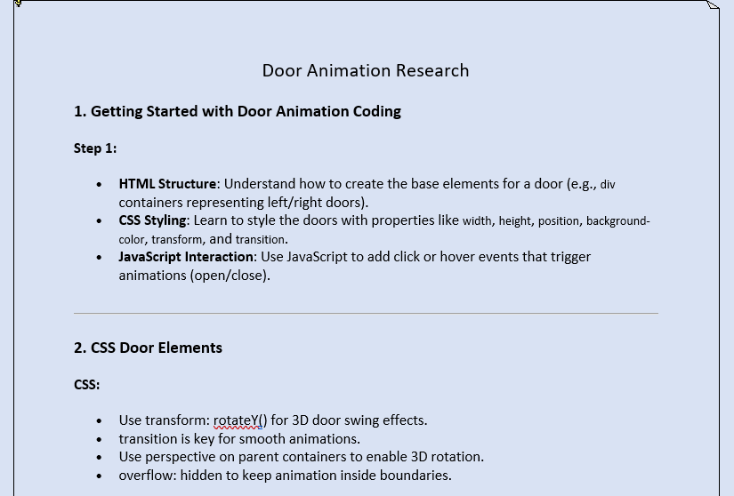
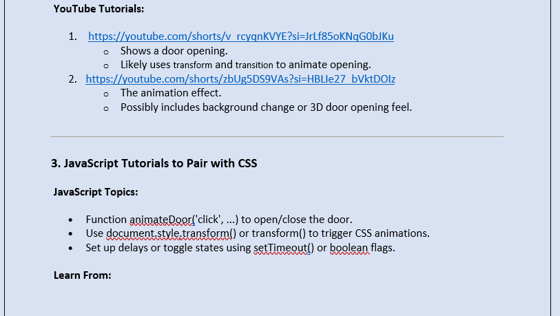
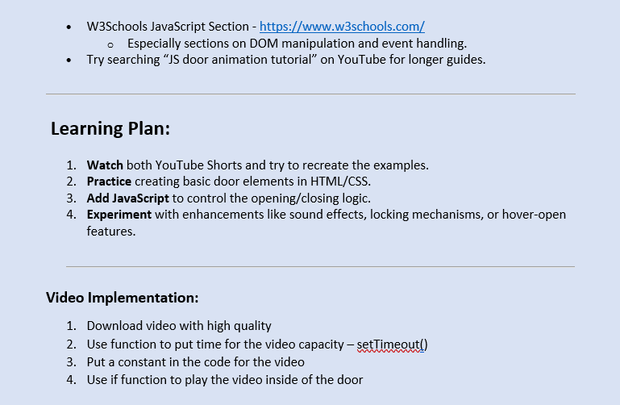
The research process was organized and informative. By breaking the topic into HTML structure, CSS styling, JavaScript control, and multimedia integration, I was able to understand not just how to build a door animation, but why each step was necessary. The tutorial videos helped visually reinforce the techniques I studied. Referencing W3Schools also supported my understanding of JavaScript functions and DOM manipulation.
The video implementation section of the research added an interesting layer of interactivity that went beyond basic door animations, making the study more applicable to multimedia-rich web interfaces.
Researching door animation coding has given me a structured understanding of how to build dynamic, interactive web elements. Instead of jumping straight into implementation, I focused on breaking down each component of the animation, studying best practices, and identifying useful resources.
By documenting everything step-by-step, I’ve created a reusable framework I can refer to when working on similar interactive design projects in the future.
For my user testing session, I asked a user to explore my portfolio website to gather feedback on its usability, design, and content clarity. The goal was to understand how others experience my site and identify areas for improvement.
I observed how the user interacted with the different parts of my website: the homepage, navigation menu, 3D carousel, and the “Learning Outcomes” section. I also asked targeted questions to learn more about their first impressions, what content they expected to find, and how intuitive the site felt to them.
I designed a series of user testing questions focused on first impressions, navigation, content clarity, visual design, and overall experience. After the user explored my portfolio, I asked them to answer these questions so I could gather structured, honest feedback. This approach helped me evaluate how well my site communicates my work and how intuitive it is for others to navigate.
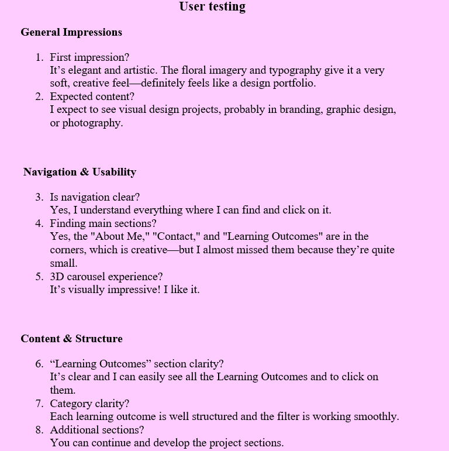
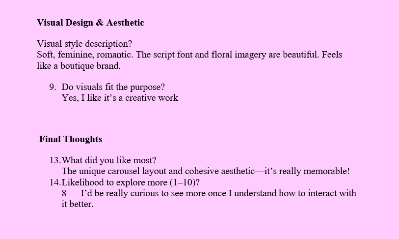
From this feedback, I learned that my website makes a strong visual impression and aligns well with the creative nature of my work. However, small usability issues—like hard-to-spot navigation links—can detract from the experience. This highlighted the importance of not just aesthetics, but also accessibility and user-centered design.
I'm really pleased that the unique layout and consistent aesthetic of my site resonated with the user. They especially liked the 3D carousel and described the visual design as romantic and memorable. Their interest in seeing more of my work—rating their likelihood to explore further at 8 out of 10—encouraged me to keep developing and refining the portfolio. Overall, the structured questions helped gather clear, actionable insights that I can use to improve the site further.
As part of our group project to redesign the BELCO Alliance website, I was responsible for creating and managing a user survey to gather feedback on the site's current usability, design, and features. BELCO is a non-profit collaboration between five universities that supports international academic exchange, so it was important for us to understand the needs of students, partners, and institutions interacting with the platform.
I created a detailed survey based on input from BELCO and our own design goals. The questions covered a range of topics including how users navigate the current website, what layout elements they find most helpful, and how they feel about incorporating interactive features like animations. I made sure to include specific creative ideas, such as a door animation on the homepage and a plane animation flying over each partner university, so we could directly test those concepts with real users.
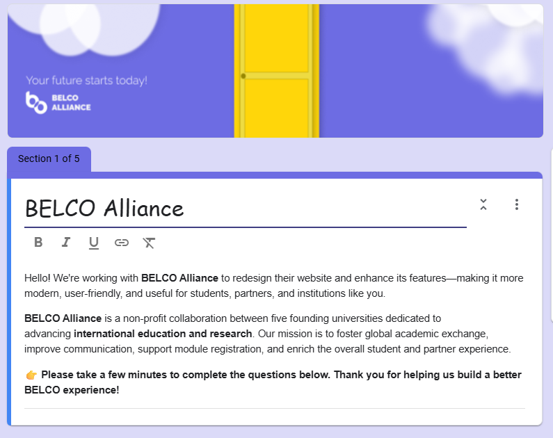
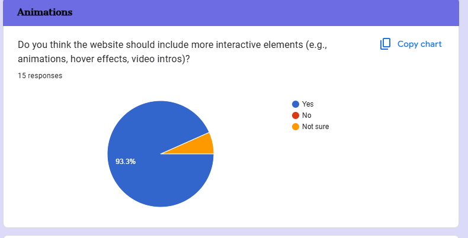
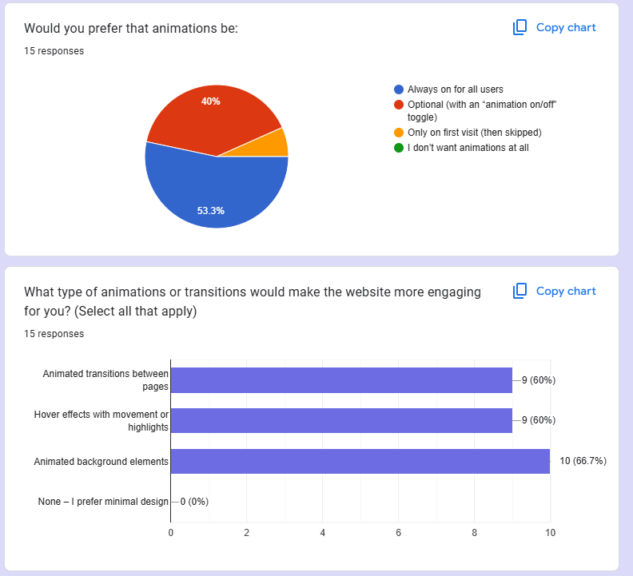
The survey went really well—we received valuable feedback from people with different types of relationships with BELCO, including students and institutional partners. I found that many users wanted a cleaner, more modern site with intuitive navigation and clearer access to key tools like module registration and contact information. When it came to animations, I was surprised (and happy) to see that most people were actually excited about our ideas. The door opening animation and the plane flying animation both received positive responses, with many people saying these features would make the experience more engaging without being overwhelming.
This process taught me how important it is to directly involve users in design decisions. It’s easy to assume what people want—but seeing the actual data gave me and my team real clarity. I also learned how to balance creativity with usability; just because something looks cool doesn’t mean it will work for everyone. In this case, though, users clearly supported the animations we proposed, which validated our design choices and gave me confidence in our direction.
Overall, the survey was a crucial part of our group project. It not only gave us direct insight into user expectations but also helped us make informed, user-centered decisions—especially around creative features like animation. Based on the feedback, we decided to keep both the plane and door animations in the final design. This choice felt meaningful because it was backed by real opinions, not just our own preferences. I’m proud of how the survey helped guide our work and ensure the new BELCO website will truly reflect what users want.
As part of the stakeholder engagement process, I conducted and recorded an interview to better understand their expectations, needs, and overall vision for the project. Recording the session ensured that no important details were missed. After the interview, I transcribed the entire conversation to gain a clearer and more structured understanding of the information shared.
After completing the interview, I began transcribing the audio recording. This process involved carefully listening to the stakeholder’s responses and documenting them accurately. Transcription required patience and attention to detail, especially to capture the nuances and context of what was being said. Through this process, I was able to analyze the stakeholder’s input more thoroughly and identify key themes, pain points, and priorities that may not have been immediately obvious during the live conversation. This helped me build a more complete picture of their requirements.
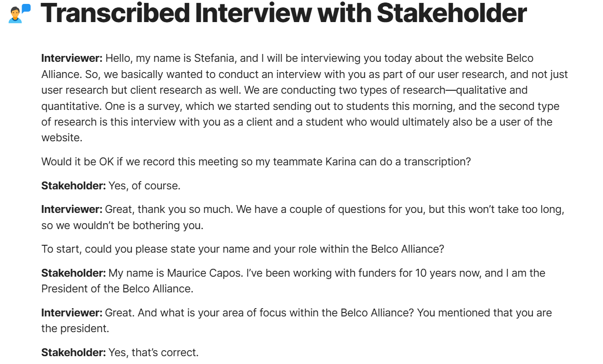
Overall, the transcription process went well. Although time-consuming, it proved to be an incredibly useful exercise. It allowed me to revisit certain parts of the conversation and clarify points that were ambiguous or complex during the live interview. I noticed that some ideas the stakeholder shared casually actually carried significant weight in terms of project direction and goals. This reinforced the value of revisiting and reflecting on conversations after they occur.
Transcribing the interview provided me with a deeper, more structured understanding of the stakeholder’s perspective. It highlighted the importance of accurate documentation in capturing and preserving critical insights. This step served as a bridge between the initial interview and future decision-making stages, such as requirement analysis and solution design. In future projects, I will continue to use transcription as a reflective tool—not only to ensure accuracy but also to support better interpretation of qualitative data. This experience also made me more aware of how essential clear communication is in building alignment with stakeholders and delivering outcomes that meet their expectations.
As part of a collaborative effort, I contributed to the presentation for the redesign of the Belco Alliance website. This presentation was aimed at showcasing our current progress, explaining the design process, and outlining future plans for improving the website.
My specific contributions included designing several key slides: the table of contents, prototype, design choices, "Thank You for Your Attention," and the "Our Goal" slide. I focused on making sure these sections were visually appealing, clear, and aligned with the overall message of the presentation. I also worked to ensure that the flow between slides was smooth and logical, enhancing the overall storytelling of our design journey.
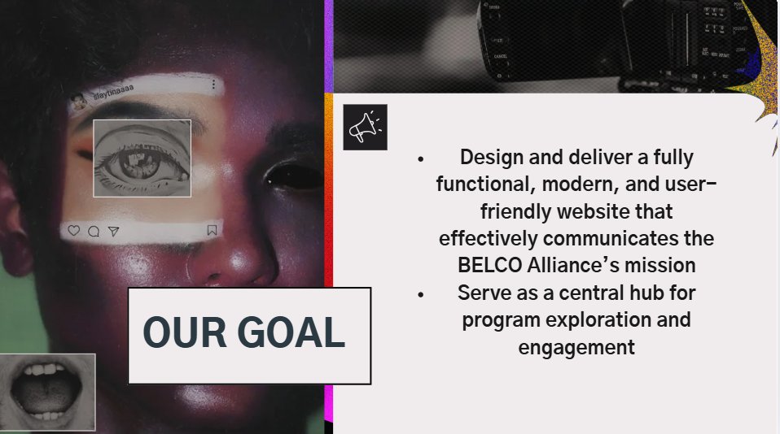
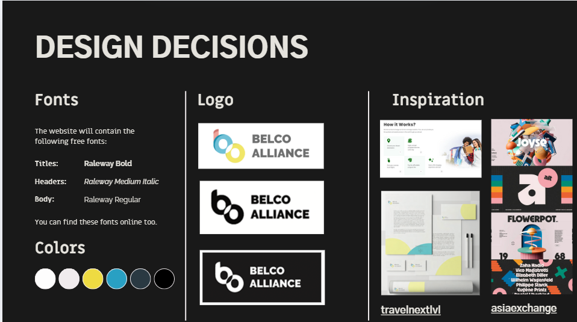
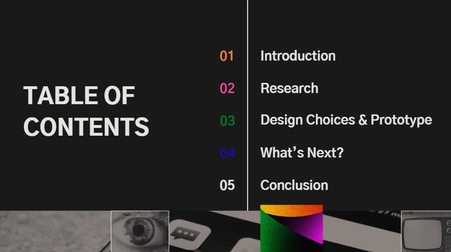
This experience allowed me to grow both creatively and professionally. Designing for a real-world project taught me the importance of planning, structure, and user-centered design. I’m proud of the contributions I made, and I feel more confident in my ability to design meaningful visual content. Moving forward, I’ll take the lessons I’ve learned from this project—especially about teamwork and presentation clarity—into future projects.
To better organize and manage tasks for Project X, I created a Trello board. This tool allows me to visually track progress, set priorities, and ensure that nothing falls through the cracks.
I set up three main lists on the Trello board: To Do, Still in Process, and Done. These categories help structure the workflow clearly. I then began adding individual cards under each list to represent specific tasks. On each card, I detailed what needs to be done, any relevant deadlines, and additional notes to keep everything organized.
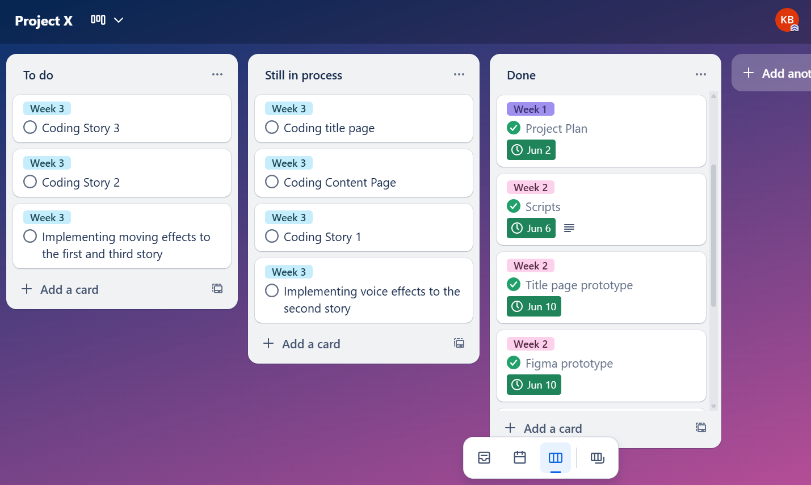
I set up three main lists on the Trello board: To Do, Still in Process, and Done. These categories help structure the workflow clearly. I then began adding individual cards under each list to represent specific tasks. On each card, I detailed what needs to be done, any relevant deadlines, and additional notes to keep everything organized.
Creating and using a Trello board for Project X was a valuable experience. It helped me improve my time management, task prioritization, and accountability. In the future, I plan to integrate labels, due dates, and checklists more extensively to make the board even more powerful. Overall, this exercise reinforced the importance of good organization in project success.